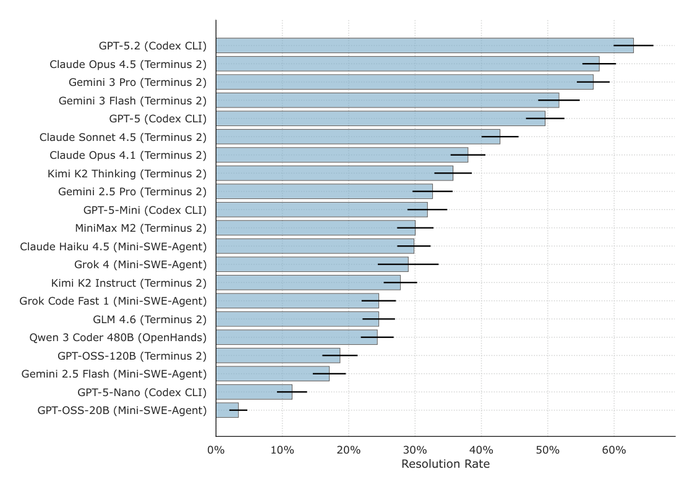

二、国内外研究现状
CLI 智能体：在终端里操作系统
CLI
→
Coding
→
GUI
→
混合

Terminal-Bench：容器化终端任务与测试 [Merrill et al., 2026]

Terminal-Bench 2.0 各模型 × 运行时成绩
终端排障轨迹：日志、配置与服务状态（5×）
优点：高效、可脚本化；文件、日志、进程等系统状态直接可读；Claude Code、Codex CLI、OpenClaw 等运行时已产品化
不足：只能完成"有命令行接口"的事；复杂任务需要组合与编写程序
→ 需要更强的动作：写代码